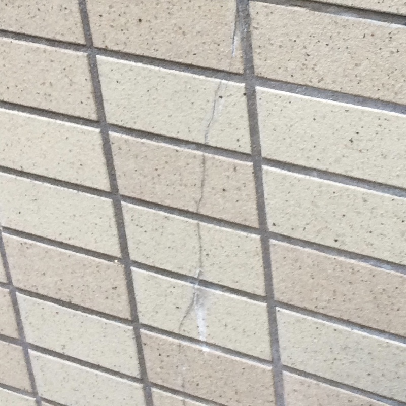
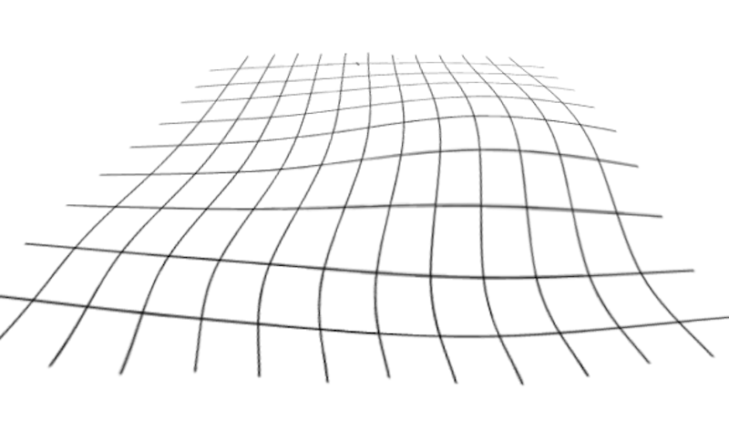

- タイル
-
旧分類表記(自然吸水率) 新分類表記(強制吸水率) 磁器質（1.0%以下） Ⅰ類（3.0%以下） せっ器質（5.0%以下） Ⅱ類（10.0%以下） 陶器質（22.0%） Ⅲ類（50.0%以下） - 建築物の壁や床に幅広く使用される陶磁器製の板状の仕上げ材。 主に陶器質、せっ器質、磁器質の3種類に分けられる。 2008年のJIS規格の改正により、吸水率の違いでⅠ類、Ⅱ類、Ⅲ類に分類に変更されました。
- 磁器質タイル（Ⅰ類）
-
吸水率3%以下
硬くてほとんど水分を吸わない。 耐久性に優れているので、外装に向いているが、 内装に使用される事も多い。 - せっき質タイル（Ⅱ類）
-
吸水率10%以下
硬く、耐久性に優れている。 素朴で暖かみのある物が多い。 主に外壁や床に使用される。 - 陶器質タイル（Ⅲ類）
- 吸水率50%以下でよく水分を吸うタイル。 強度が低いので、主に内装壁に使用される。
- 目地（めじ）
-
タイルとタイルの間の隙間の事。
一般的には目地は目地用のセメント（目地材）で埋める事が多い。 表面の荒いタイルの場合は埋めずに仕上げる事もある。 目地の広さや目地材の色によって仕上がりの雰囲気が大きく変わります。 - 100角、300角など
-
「◯◯角」の◯◯が１辺の寸法（mm）の正方形タイル
一般的には目地幅寸法も含めての呼び名ですが、タイルの実寸法の値の場合もあります。 - 二丁掛（にちょうがけ）
-
長辺=227mm、短辺=60mmの長方形タイル
主に外壁や塀に使用されます。 - 小口（こぐち）
-
長辺=108mm、短辺=60mmの長方形タイル
主に外壁に使用されます。最近では内装でも使われます。 - 45二丁（よんごーにちょう）
-
長辺=95mm、短辺=45mmの長方形タイル
ビルの外壁に多く使われています。 - 45角（よんごーかく）
-
１辺が45mmの正方形タイル
主に外壁と浴室の床等に使用されます。５０角（ごじゅっかく）とも言われます。 - ボーダータイル
- 明確な定義はされていませんが、 長辺=250mm、短辺=50mmなど、細身の長方形タイル
- 36角（さぶろくかく）
-
昔の規格の大きさのタイル
1辺が三寸六分=約11cmの正方形タイル 今ではほとんど使用されない。 大きさが100角と似ているので、補修の場合注意が必要です。 - モザイクタイル
-
寸法が小さなタイル
主に内装に使用される細かいタイル。１枚づつ張るのは困難なので、 300角位のシートにユニット化されている物が多い。 - ガラスモザイク
-
ガラスのモザイクタイル
ガラスにしか出せない艶でタイルより高級感があります。 ガラスなので、現場での切断加工は難しいです。 - 役物（やくもの）
-

-
出隅(ですみ)コーナー部分などに使用するための特殊形状タイルの事
外装、内装に様々な種類があります。 曲り、屏風曲り、面取、両面取、タレ付き段鼻、小端施釉など。 対して標準の形状の事を「平物(ひらもの)」、「平(ひら)」という。
- 馬目地（うまめじ）
- 配置寸法を段ごとに半分ずつずらして張る張り方。
- いも目地（いもめじ）、通し目地
- 縦横の配置をそろえて目地を通す張り方。
- 四半目地（しはんめじ）
- いも目地の基準を45°回転させ、対角線を基準とする張り方。
- イギリス張り
- 二丁掛と小口を段ごとに交互に張る張り方。
- フランス張り
-

-
画像の張り方
あまり使われませんが、面白い張り方ですね。 - やはず張り(ヘリンボーン)
-
言葉では説明できません。(^^ゞ 画像の張り方です。
個性的で愛着のわく張り方ですが、施工は大変です。
-
陸墨(ろくずみ)
垂直墨(すいちょくずみ) -
タイルに限らず建築の基本
陸墨は水平のライン、垂直墨は垂直のライン 水平と垂直が交差する角度が直角(90°)になり、 壁にタイルを張る時の基準となります。 - 矩(かね)
-
直角(90°)の事。
タイルを張る基準となる 基準の直角ラインを決める時に 「矩を出す」と言ったりします。 - 割り付け、タイル割り
-
タイルを張る前に計画するタイルの配置計画
施工面全体の寸法とタイルの大きさを考慮して なるべく小さなカット物が入らないようにするのが好ましい。 - 心(しん)割り
-
タイル割りの種類のひとつ
施工面の中心とタイルor目地の中心を合わせる方法 左右対称に配置されるので安定感がある。 - 方追い(かたおい)
-
タイル割の種類のひとつ
施工面の一方の端部からスタートさせる方法 特に目につく部分を優先して配置したい場合に用いる。 - 真物(まもの)
- カットしていないタイルの事。
- 半マス(はんます)
- 真物を半分にカットしたタイルの事。
- 浮き、剥離(はくり)
-
何らかの原因によってタイルが下地からはがれそうになっている状態の事
外壁の高所であれば大変危険な状態。
「打診棒」という道具で音による調査ができる。 - クラック
- 
-
タイルが割れてヒビが発生している状態の事。
原因は様々ですが、高所や水かかりのある部分は早期に対処する事が望ましい。 - ピンホール
-
目地に穴があいている状態の事
施工不良の場合と経年劣化が原因の場合とがある。 - 不陸(ふりく)
- 
-
表面が平(たいら)でなく、凸凹がある状態の事
タイル施工においては張る前の下地に不陸があると仕上げにも影響してしまう 下地の状態の良し悪しはとても重要です。 - 水勾配(みずこうばい)
-
床面に考慮する傾斜
水かかりのある床の施工面では、水が溜まらないように考慮する必要があります。 寸法の大きなタイルでは排水目標の位置によっては 水勾配をとるのが困難な場合があります。